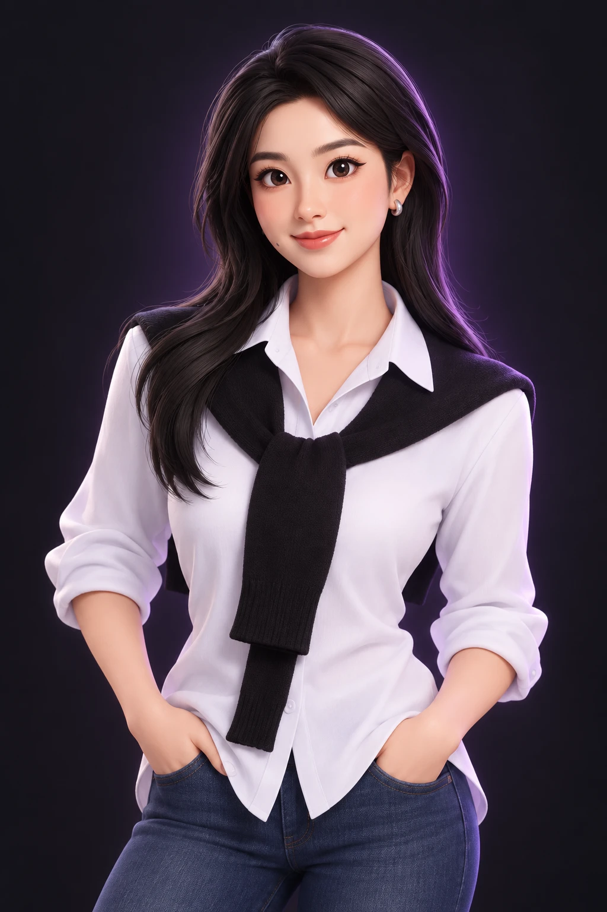

香港都会大学
人文社会科学学院 · 创意写作文学硕士

CHOOSE YOUR PATH
选一个方向，我带你看具体作品与成果
01 / ABOUT ME
我擅长把创意转化为内容，把资源组织成项目，把执行落到可衡量的成果。
以云南艺术学院表演专业与香港都会大学创意写作硕士学习经历为基础，我将叙事表达、内容策划与团队管理结合，能够从选题构思、资源协调推进到现场执行与内容交付。
在直播运营中，通过流程规范与数据分析，将团队整体月流水从 20 万元提升至 57 万元，团队连续 8 个月位列平台主播收入榜 TOP 3，内容违规率下降 70%。在湖北日报全媒体集团参与新闻采编与“在线访谈”制作，并独立完成新闻稿件撰写及发布。
我也担任 Repair Mate 创业项目团队负责人，探索 AI 与家庭维修服务的结合；在艺术活动统筹中，推动场地合作、争取免费舞台及灯光音响资源，并独立完成宣传物料设计。创作、运营、协作与落地，是我能够带给团队的具体价值。
人文社会科学学院 · 创意写作文学硕士
戏剧学院 · 表演学士
02 / EXPERIENCE
内容、协作与执行，
是我持续积累的能力。
编辑与采访
主播与运营管理
活动统筹与执行
03 / SELECTED WORKS
以五个“面具人”呈现毕业生求职过程中的焦虑、乐观、自卑、自大与平和，讲述自我调适与重新出发的故事。
从福贵的生命历程出发，讨论生活的无常、平凡时刻的珍贵，以及作品的文学价值与意义。
辅助创意搭建与拍摄构图。以花香为主题，在花海与森林的画面中表达自然、芬芳和生活之美。
观看广告片04 / ENTREPRENEURSHIP
HKMU MetroChallenge 2026
团队负责人 · 邓易韵梓
让家庭维修更容易理解，
也更容易找到帮助。
面向香港家庭维修场景的创业方案，结合图文知识、AI 实景问答与维修师傅匹配，探索清晰、便捷的维修服务。
常用工具与常见故障的基础知识。
通过照片或镜头描述维修场景。
探索事前报价与附近维修服务对接。
项目提案与产品原型
05 / BEYOND WORK
影视配音作品《追寻》获第二十一届麻园毕业作品联合影展“最佳声音创作”奖。
参与“美丽心灵”大学生艺术支教团，于昆明市呈贡区第五小学支教，获“优秀支教教师”荣誉。
参加 2024“雨花谈艺”西南地区话剧高层次人才国际表演大师班，并完成电商网络创业培训。
06 / LEARNING & RECOGNITION
从艺术教育到创业实践。
2024.09.09–09.24 完成培训并考核合格；2024.10.30 发证。
LET’S CONNECT